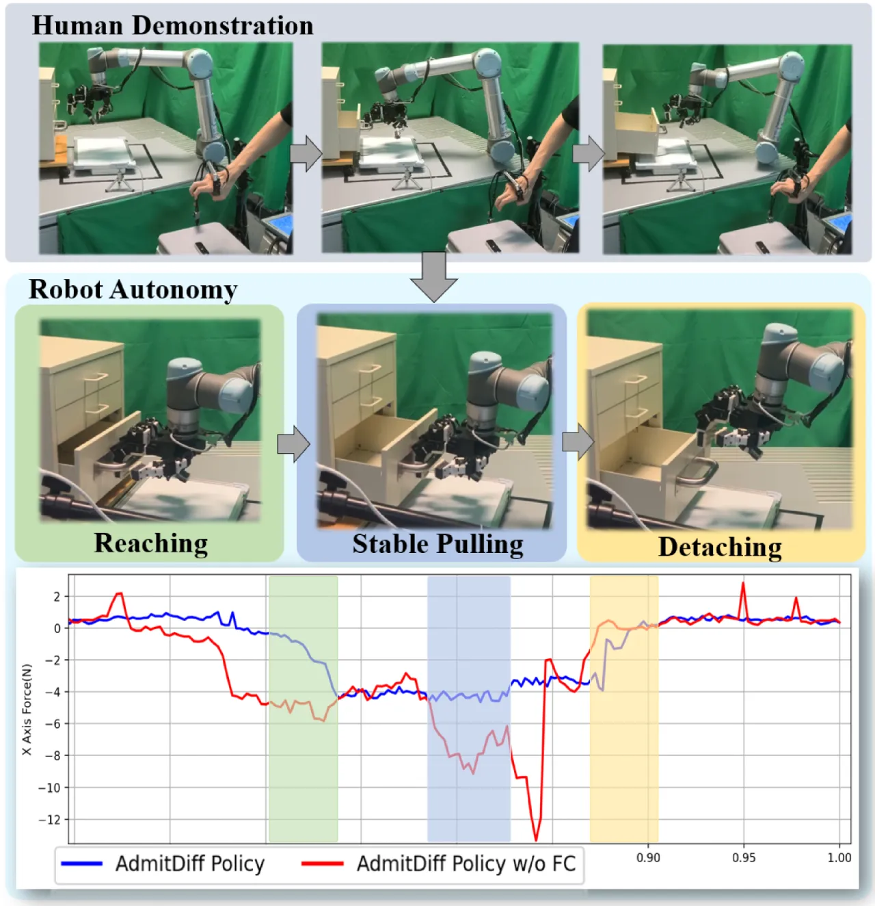
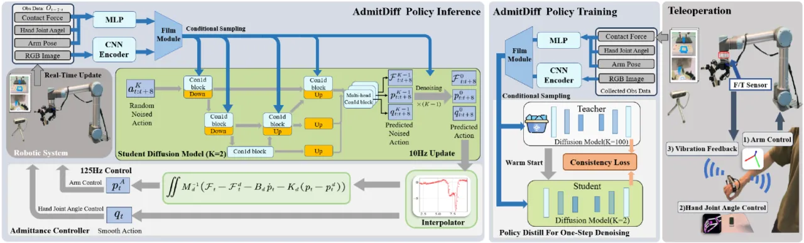
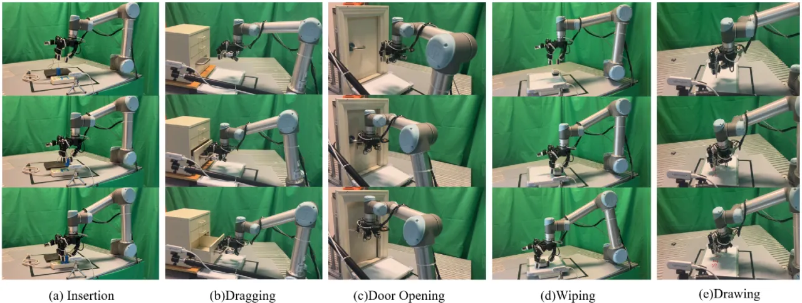
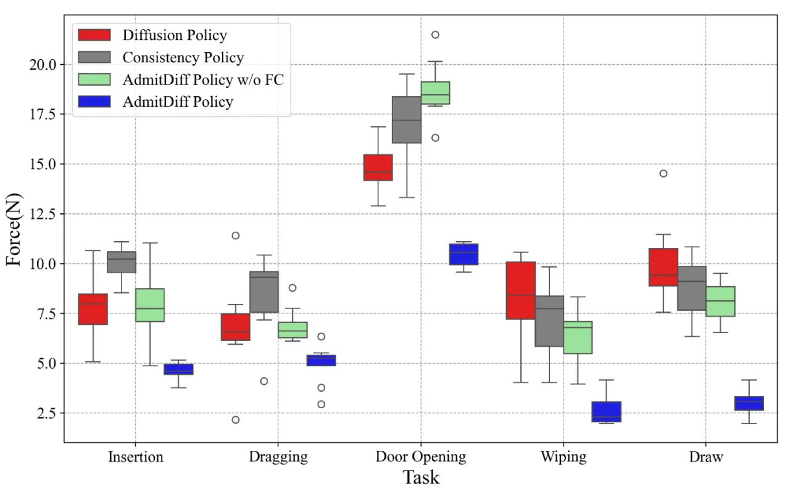

把 contact force 当作与视觉、本体同等重要的一路观测：用一套低成本带触觉反馈的遥操作系统采集"柔顺"示范，用 diffusion 模型同时规划动作轨迹与期望接触力，再交给 admittance controller 柔顺执行。五个接触密集任务上，平均接触力降低 48.8%、成功率提升 15.3%。
接触密集环境里，机器人光靠视觉与本体感知远远不够：碰撞感知、高精度抓取、高效操作都要靠接触力来补足信息。但现有 vision-based 遥操作难以给操作者交互反馈、也难以精确捕捉手部与手指动作；而现有 diffusion 策略对力控阶段切换与控制精度关注不足。
"Contact force in contact-rich environments is an essential modality for robots to perform general-purpose manipulation tasks, as it provides information to compensate for the deficiencies of visual and proprioceptive data in collision perception, high-precision grasping, and efficient manipulation."
作者指出瓶颈有二：其一，数据采集难 —— 缺少能给操作者力反馈、又能精确检测手指关节的低成本遥操作方案；其二，持续力控缺位 —— "there is limited work addressing continuous force control within general-purpose multi-stages manipulations",尤其是多指手在多阶段任务里的力规划与控制。

整体框架称为 AdmitDiff Policy,由三块组成:(1) 低成本带触觉反馈的遥操作系统采数据;(2) 以 force / vision / proprioception 为输入的 diffusion 模型,同时输出动作轨迹与期望接触力;(3) 导纳控制器 (admittance controller) 把力-位轨迹转成柔顺执行的目标位姿。

三个功能模块:Wrist Pose Module 用 Intel RealSense T265 跑 Visual-Inertial Odometry 提供腕部空间位姿;Gesture Detection Module 用 Ultraleap Leap Motion Controller 估计手部关键点,再 kinematic retargeting 到机器人手;Force Feedback Module 在操作者掌心贴 ERM 振动马达,把 0–20N 接触力线性映射为振动强度,让人"感到"接触。
策略函数把全局/局部图像、本体状态与腕部 F/T 传感器读数映射到 (末端位姿 p_ee、手指关节角 q_finger、期望接触力 F_desired)。网络用 ResNet-18 编码视觉、3 层 MLP 编码低维量,再由 multi-head Conv-Blocks 分别预测不同动作相关量,并以 FiLM 条件化 —— 让接触力从一个被动读数升级为策略主动规划的输出目标。
在 EDM 框架下先训一个 100 步去噪的 teacher,冻结后用 consistency loss 蒸馏出单步去噪的 student。推理耗时从 Diffusion Policy 的约 100 ms 压到 Consistency Model 的约 7 ms,满足实时闭环力控。
用二阶导纳模型 M_d(p̈−p̈_d)+B_d(ṗ−ṗ_d)+K_d(p−p_d)=F−F_d 把"期望力与期望位姿"融合成实际目标位姿;M_d/B_d/K_d 按任务调。目标位置与力用一维线性插值 (Interp1d)、旋转用球面线性插值 (Slerp) 平滑,输出到 125Hz 底层控制。
在真实机器人上设计五个针对不同 action primitive 的接触密集任务,每个任务采 50 条示范轨迹,训练 400 epochs(约 8 小时)。对比 Diffusion Policy (DP)、Consistency Policy (CP) 两个 SOTA,以及去掉力控模块的消融 AdmitDiff Policy w/o FC。

| Task | Diffusion Policy | Consistency Policy | AdmitDiff w/o FC | AdmitDiff Policy (Ours) |
|---|---|---|---|---|
| Insertion | 60% | 70% | 75% | 90% |
| Door Opening | 70% | 75% | 80% | 95% |
| Dragging | 80% | 80% | 85% | 95% |
| Wiping | 70% | 75% | 85% | 90% |
| Drawing | 20% | 25% | 40% | 45% |
| Average | 60% | 70% | 73% | 83% |
相对其它方法,平均成功率提升约 15.3%。带力控(Ours)在每个任务上都是最高。

去掉力控 (w/o FC) 后成功率与接触力平稳性都明显下降,说明把期望力纳入规划 + 导纳执行是主要增益来源,而非单纯换扩散/一致性骨干。作者还在 Telekinesis Benchmark(TABLE I)上评测了本文遥操作系统的采集性能。
作者在结论中表示未来将"探索 finger-level admittance control 以实现更精确的力控操作",并把方法推广到"更复杂的任务以进一步验证泛化能力"。当前导纳控制主要作用于末端位姿层面。
Drawing(划写)任务四种方法成功率都很低(20%→45%),即便 Ours 也仅 45%。这类以视觉引导、空间轨迹精度为主、触觉约束弱的任务,收益有限。
导纳矩阵 M_d/B_d/K_d 需"tuned per task",且每个任务单独采 50 条示范、训练约 8 小时。尚未展示跨任务/零样本的统一策略。
方案依赖腕部 F/T 传感器与掌心 ERM 振动反馈遥操作套件;虽总成本 <$400,但相比纯视觉方案仍引入额外硬件与标定环节。